Data Visualization with ggplot2
Overview
In this lesson we will work with ggplot2 and its
“grammar of graphics” to create a variety of plots using the
gapminder data we saw in the last lesson.
Grammar of graphics
When people talk about ggplot2 you may hear them use the
phrase “grammar of graphics,” which is a conception of statistical
graphics developed by Leland Wilkinson. The main components of the
grammar (in bold) are defined as follows in the book ggplot2: Elegant Graphics for Data
Analysis.
All plots are composed of the data, the information to visualize, and a mapping, the description of the data’s variables are mapped to aesthetic attributes. There are five mapping components:
- A layer is a collection of geometric elements and statistical transformations. Geometric elements, geoms for short, represent what you actually see in the plot: points, lines, polygons, etc. Statistical transformations, stats for short, summarise the data: for example, binning and counting observations to create a histogram, or fitting a linear model.
- Scales map values in the data space to values in the aesthetic space. This includes the use of colour, shape or size. Scales also draw the legend and axes, which make it possible to read the original data values from the plot (an inverse mapping).
- A coord, or coordinate system, describes how data coordinates are mapped to the plane of the graphic. It also provides axes and gridlines to help read the graph. We normally use the Cartesian coordinate system, but a number of others are available, including polar coordinates and map projections.
- A facet specifies how to break up and display subsets of data as small multiples. This is also known as conditioning or latticing/trellising.
- A theme controls the finer points of display, like the font size and background colour. While the defaults in ggplot2 have been chosen with care, you may need to consult other references to create an attractive plot.
Remembering all of this isn’t necessary for generating plots quickly
with ggplot2, so don’t worry if these concepts aren’t
completely clear at first. As you work with ggplot2 you
will start to get a sense for how these things fit together and what
function calls to use.
Scatter plots
We first load the ggplot2 library:
library(ggplot2)The plots you generate with ggplot2 will usually conform
to the template:
ggplot(data = <DATA>, mapping = aes(<MAPPINGS>)) +
<GEOM_FUNCTION>() +
<COORD_FUNCTION>() +
<SCALE_FUNCTION>() +
<THEME_FUNCTION>()We may not always use coordinate, scale, and theme functions, but at
minimum we must specify the data, mapping, and geometry
functions. ggplot2 functions need data in the ‘long’
format, i.e., a column for every dimension, and a row for every
observation. Well-structured data will save you lots of time when making
figures with ggplot2. The gapminder data that
we have been using is already in the format best-suited for
ggplot2, but keep in mind you might need to use the
dplyr functions we learned in the last lesson to get to
this form for other data you may encounter.
ggplots can be built iteratively, which is great for understanding what each addition does to the resulting plot.
- Use the
ggplot()function and bind the plot to thegapminderdata frame with thedataargument:
ggplot(data = gapminder)
This plot is empty because we told it what data to use, but neither the mappings nor geometries.
- Let’s define a mapping (using the aesthetic (
aes) function), by selecting the variables to be plotted and specifying how to present them in the graph. First we’ll specify x/y axes, but later we will see how to use size, shape, color, etc.
ggplot(data = gapminder, aes(x = gdpPercap, y = lifeExp))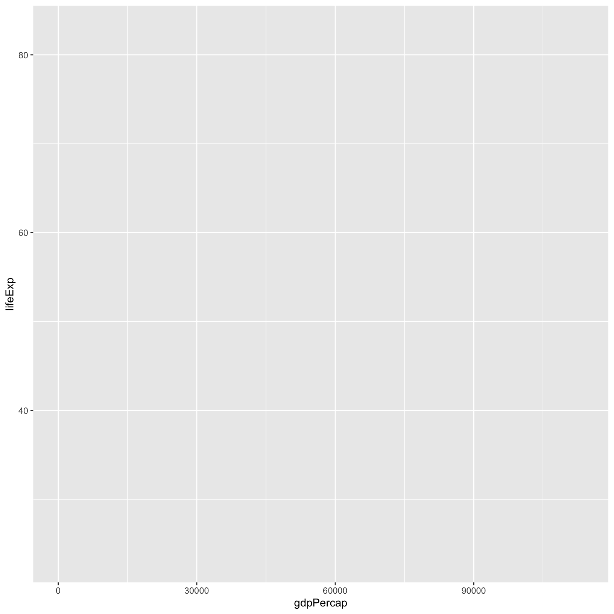
This is a little better in that we at least have axes, but there is still no data on the plot because we didn’t specify a geometry.
- Now let’s add a ‘geom’ – graphical representation of the data in the
plot (points, lines, bars).
ggplot2offers many different geoms; we will use some common ones today, including:geom_point()for scatter plots, dot plots, etc.geom_line()for trend lines, time series, etc.geom_barplot()for, well, boxplots!geom_boxplot()distributions.
To add a geom to the plot use the + operator (this is
the ggplot version of the pipe from the previous lesson).
Because we have two continuous variables, let’s use
geom_point() first:
ggplot(data = gapminder, aes(x = gdpPercap, y = lifeExp)) + geom_point()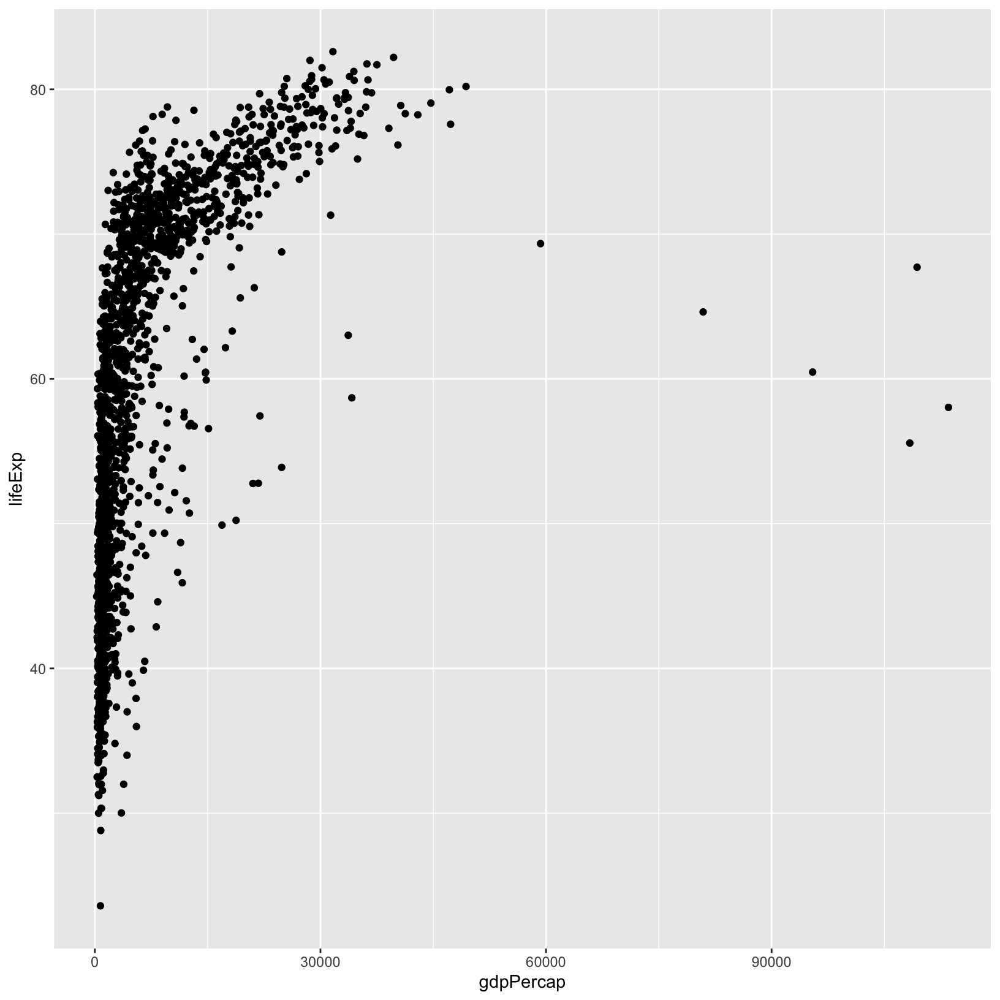
The + in the ggplot2 package is
particularly useful because it allows you to modify existing
ggplot objects. Now we might want to change some things
like the axis labels and add a title to the plot.
- We can modify plot titles, axis labels, and their sizes, colors,
etc. using theme functions. Let’s give the axis labels better names, and
give the plot a title using the
labs()function.
ggplot(data = gapminder, aes(x = gdpPercap, y = lifeExp)) +
geom_point() +
labs(title = 'GDP per Capita vs Life Expectancy', x = 'GDP per Capita', y = 'Life Expectancy')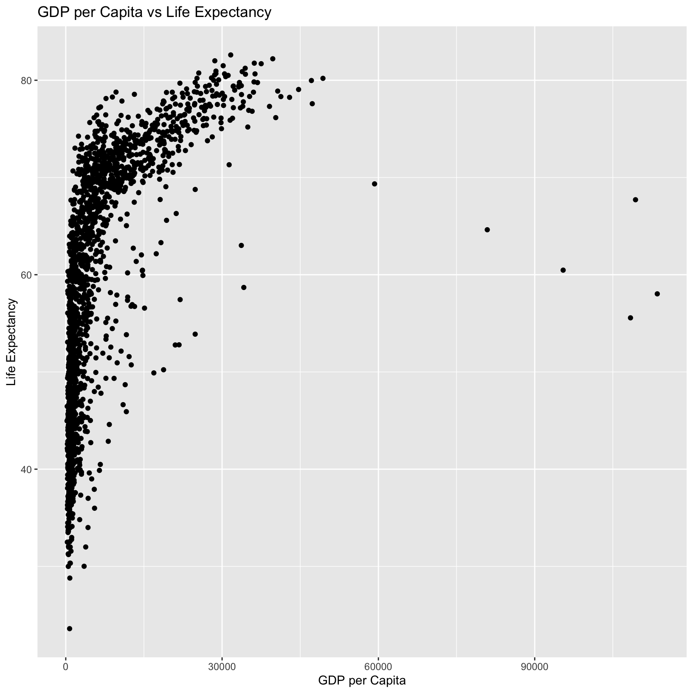
Now we have clearer labels and a good summary title. But what if we’re not keen on that gray background? We can use a theme function to change the look and feel of the graph. The Themes section of the ggplot2 book provides a good overview of theming options.
- Let’s change the theme to something lighter:
ggplot(data = gapminder, aes(x = gdpPercap, y = lifeExp)) +
geom_point() +
labs(title = 'GDP per Capita vs Life Expectancy', x = 'GDP per Capita', y = 'Life Expectancy') +
theme_bw()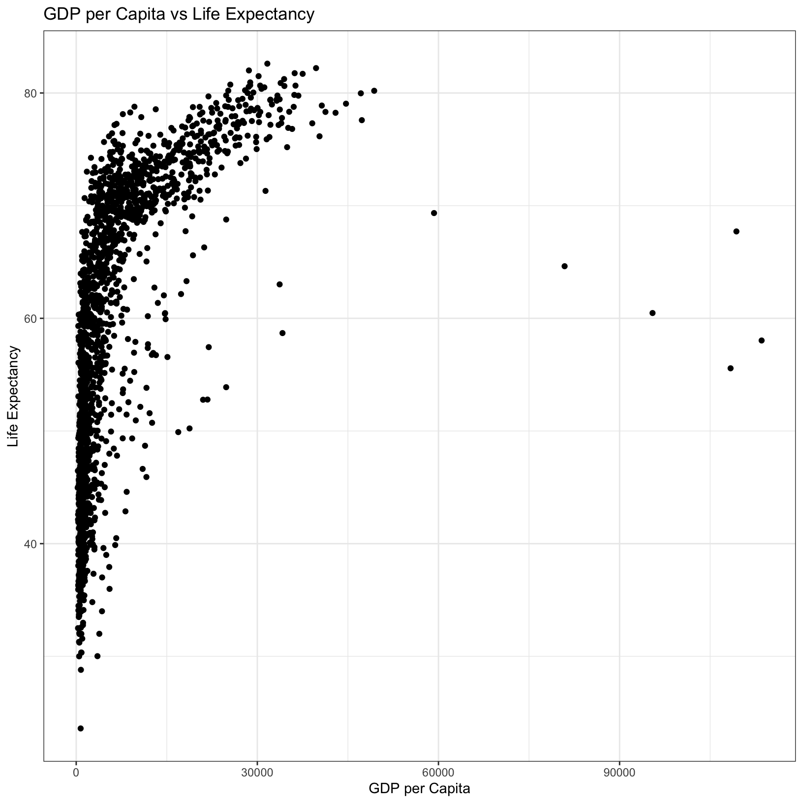
Storing plots as objects
Base graphics in R typically don’t allow plots to be saved and modified as objects, but you can with ggplots. This can be helpful for storing a base version of a plot to tinker with more easily without having to write some of the same code over and over again. For example:
base_plot = ggplot(data = gapminder, aes(x = gdpPercap, y = lifeExp))And from here we can try some different things out, like changing the color of all the points:
base_plot + geom_point(color = 'blue')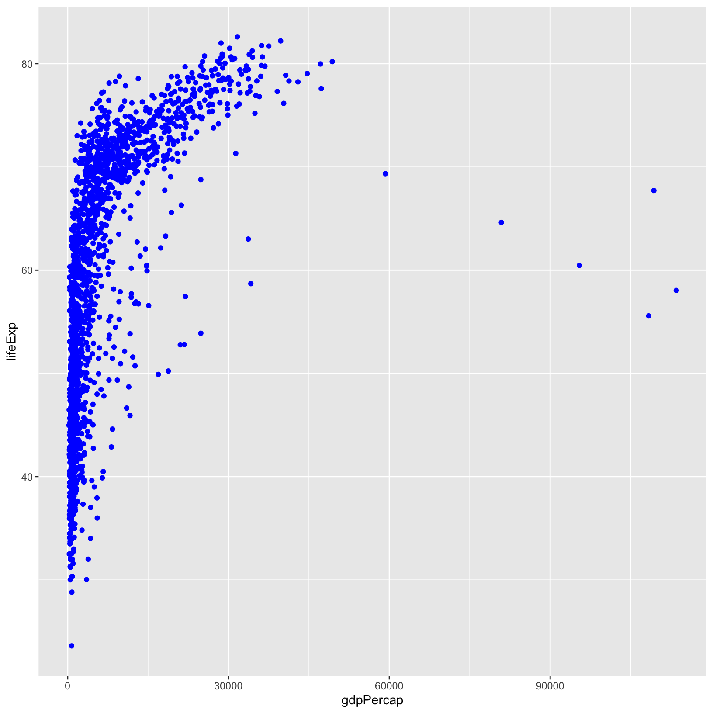
Or we can make the points a little transparent:
base_plot + geom_point(alpha = 0.5)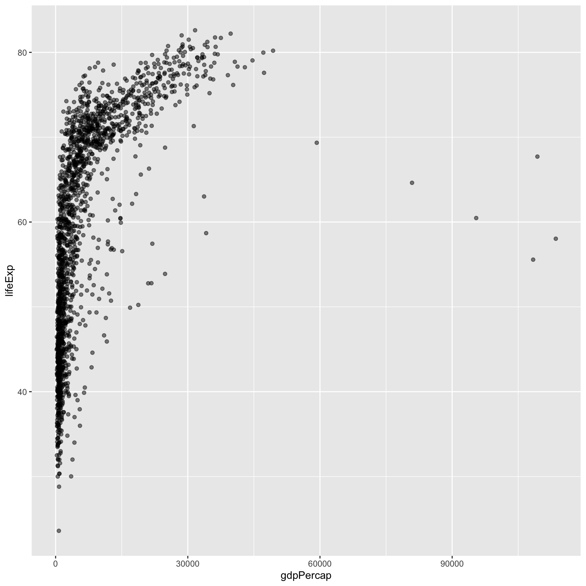
Tip
- Anything you put in the
ggplot()function can be seen by any geom layers that you add (i.e., these are universal plot settings). This includes the x- and y-axis mapping you set up inaes().- You can also specify mappings for a given geom independently of the mappings defined globally in the
ggplot()function.- The
+sign used to add new layers must be placed at the end of the line containing the previous layer.
Exploring other aesthetics
Color
To color each continent in the plot differently, you can specify that
of the data to use as the color in the aesthetic
(aes()) funciton.
ggplot(data = gapminder, aes(x = gdpPercap, y = lifeExp, color = continent)) +
geom_point() +
labs(title = 'GDP per Capita vs Life Expectancy', x = 'GDP per Capita', y = 'Life Expectancy') +
theme_bw()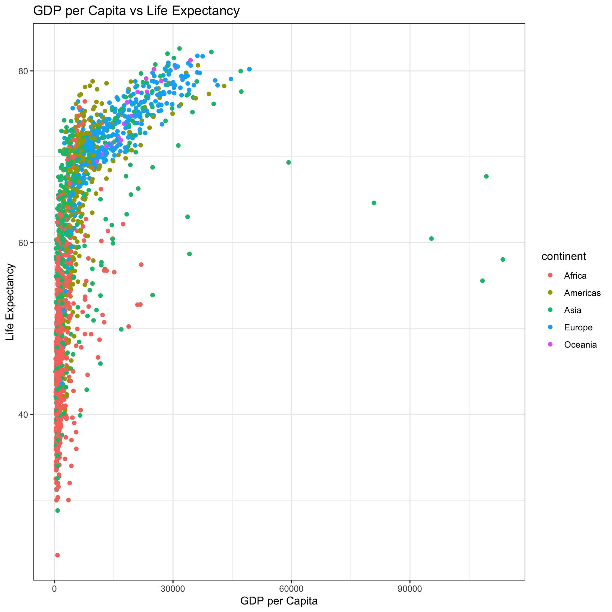
You can also change the colors that are used by specifying a named
palette, or by manually defining the colors. This
page shows some of the named palettes which are available, and
?scale_colour_brewer also shows the names of the
palettes.
ggplot(data = gapminder, aes(x = gdpPercap, y = lifeExp, color = continent)) +
geom_point() +
labs(title = 'GDP per Capita vs Life Expectancy', x = 'GDP per Capita', y = 'Life Expectancy') +
scale_color_brewer(palette = 'Set3') +
theme_bw()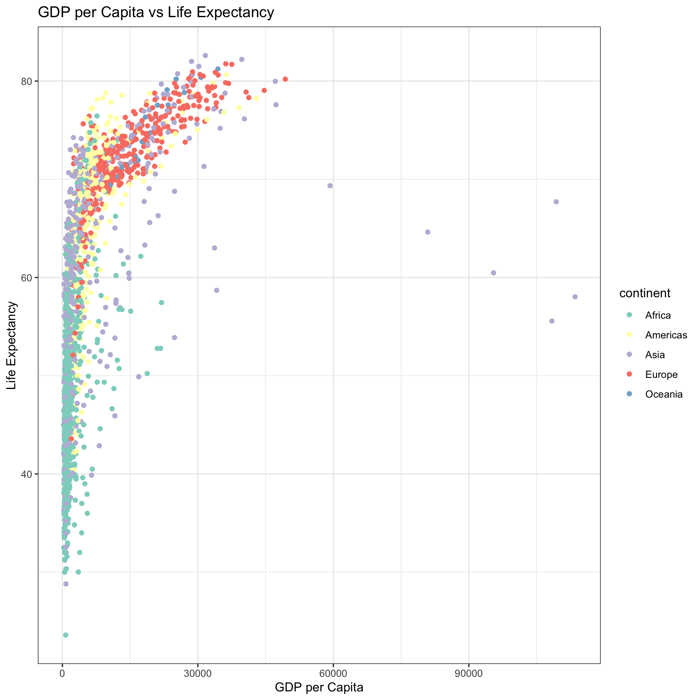
Shape
You can also alter the shape of the points by specifying
shape in the aes() function:
ggplot(data = gapminder, aes(x = gdpPercap, y = lifeExp, shape = continent)) +
geom_point() +
labs(title = 'GDP per Capita vs Life Expectancy', x = 'GDP per Capita', y = 'Life Expectancy') +
theme_bw()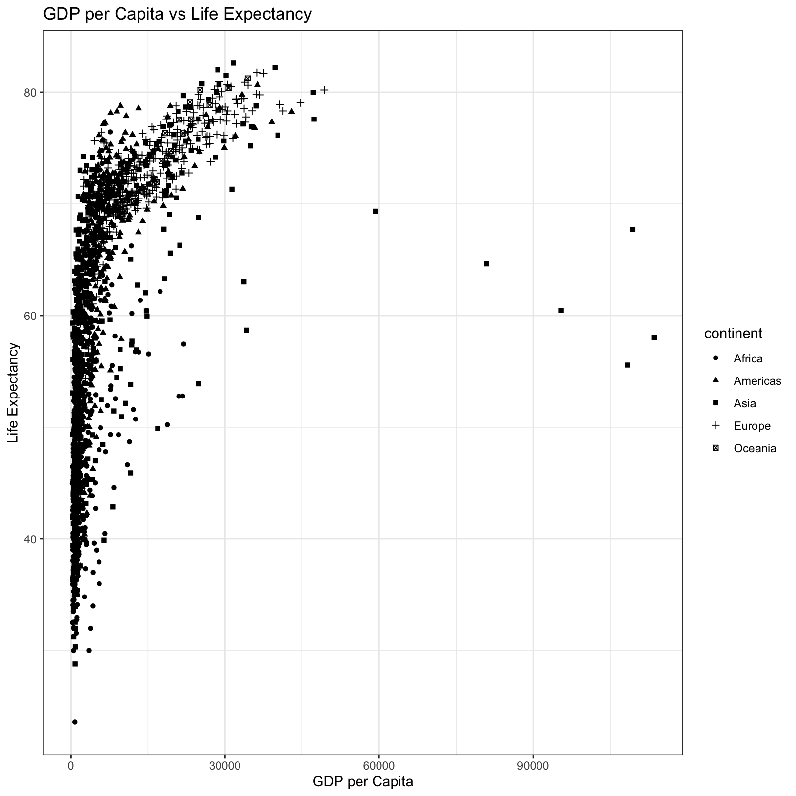
Size
You can alter the size of points by specifying size in
the aes() function while also using the continents as a
color. Let’s save this plot as an object to use later in
this lesson.
gdp_life_plot <- ggplot(data = gapminder, aes(x = gdpPercap, y = lifeExp, color = continent, size = pop)) +
geom_point(alpha = 0.5) +
labs(title = 'GDP per Capita vs Life Expectancy (Size by Population)', x = 'GDP per Capita', y = 'Life Expectancy') +
theme_bw()
# When saving a plot as an object, RStudio won't automatically display it
gdp_life_plot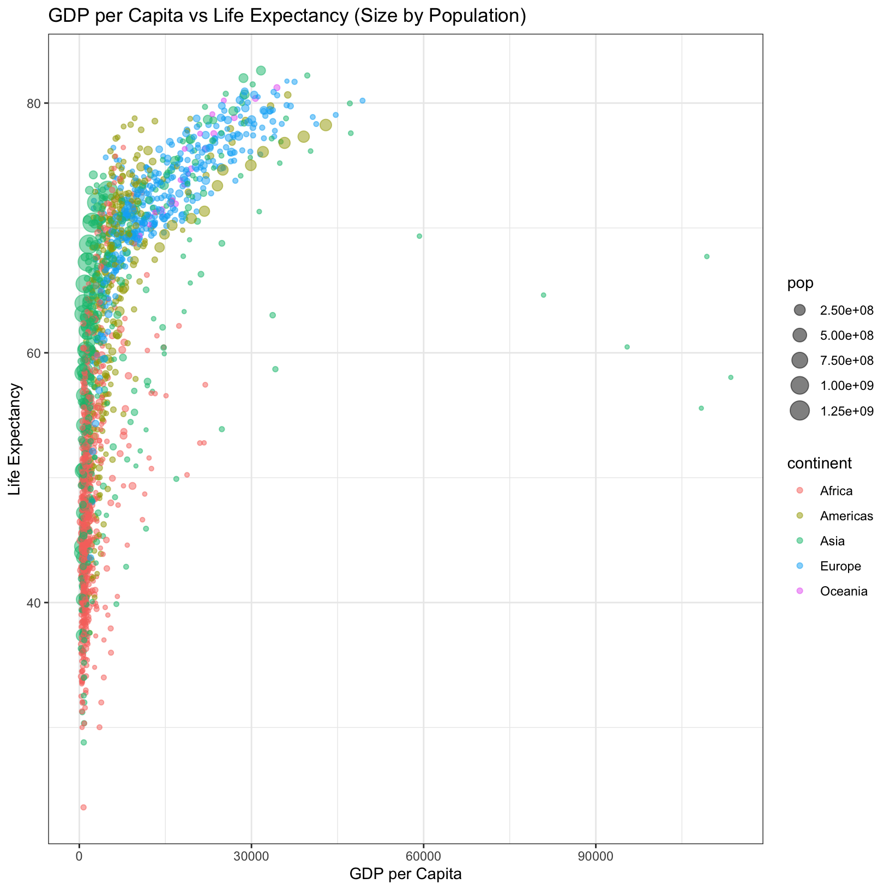
In this plot it looks like there are some outlier countries with very
high GDP per capita, with mid-range life expectancy. How can we figure
out what those countries might be? We have the gapminder
data, and we’ve learned previously how to filter() the data
based on certain conditions, so let’s practice and see if we can find
those outliers.
Exercise
Use the
filter()function on thegapminderdata to help determine what four countries lie furthest to the right in the above plot.
Solution
gapminder %>% filter(gdpPercap > 90000)# A tibble: 4 × 7
country year pop continent lifeExp gdpPercap total_gdp
<chr> <int> <dbl> <chr> <dbl> <dbl> <dbl>
1 Kuwait 1952 160000 Asia 55.6 108382. 17341176464
2 Kuwait 1957 212846 Asia 58.0 113523. 24162944745.
3 Kuwait 1962 358266 Asia 60.5 95458. 34199395868.
4 Kuwait 1972 841934 Asia 67.7 109348. 92063687055.Faceting
ggplot2 has a special technique called faceting
that allows us to split one plot into multiple plots based on a factor
in the data. Let’s use it to split our plot into five panels, one for
each continent.
ggplot(data = gapminder, aes(x = gdpPercap, y = lifeExp, color = continent)) +
geom_point() +
facet_grid(. ~ continent) +
labs(title = 'GDP per Capita vs Life Expectancy', x = 'GDP per Capita', y = 'Life Expectancy') +
theme_bw()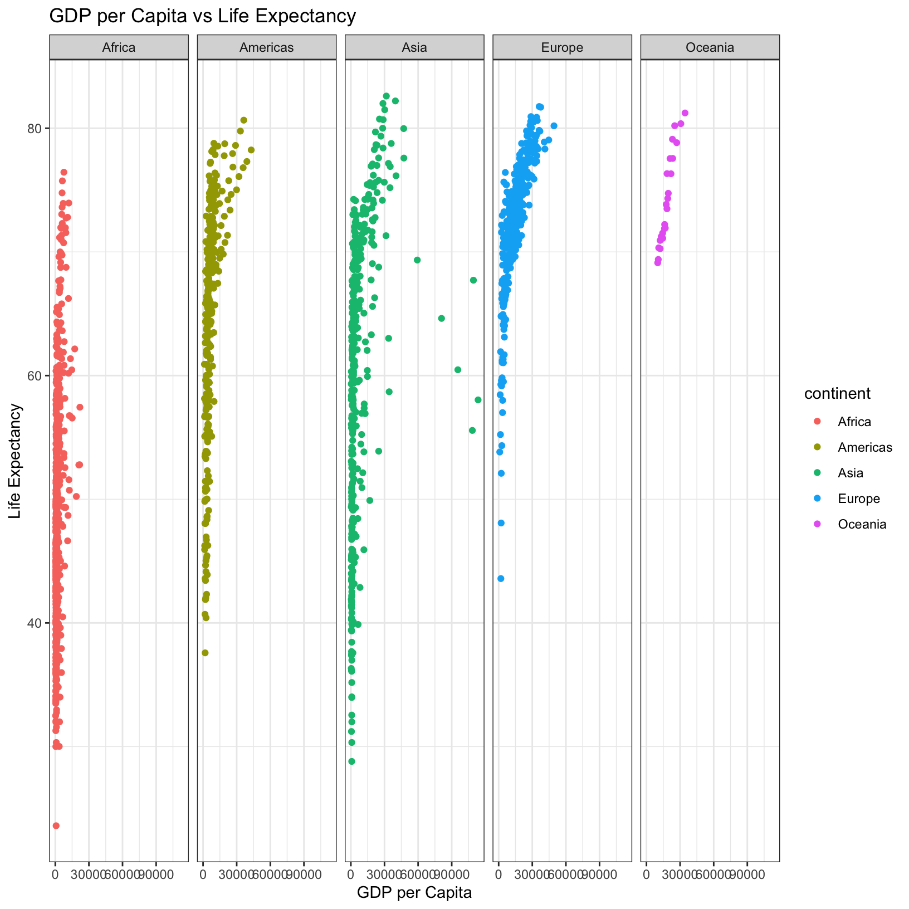
We can also experiment with stacking the facets vertically, rather
than horizontally. The facet_grid geometry allows you to
explicitly specify how you want your plots to be arranged via formula
notation (rows ~ columns; a . can be used as a
placeholder that indicates only one row or column).
ggplot(data = gapminder, aes(x = gdpPercap, y = lifeExp, color = continent)) +
geom_point() +
facet_grid(continent ~ .) +
labs(title = 'GDP per Capita vs Life Expectancy', x = 'GDP per Capita', y = 'Life Expectancy') +
theme_bw()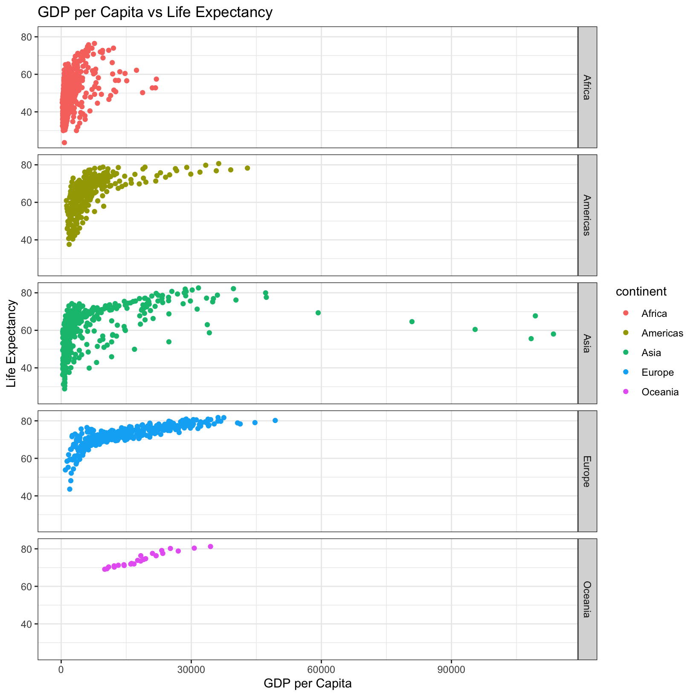
Line plots
We’ve explored a lot of options with the geom_point()
geometry, but we should expand our horizons to other geometries. Let’s
first create a subset of the gapminder data limited only to
Poland and plot the GDP per capita over all the years for which we have
data as a line plot.
Exercise
Use the
filter()function to select only the Poland data from thegapminderdata, and save it as as an object named “poland”.
Solution
poland = gapminder %>% filter(country == 'Poland')
poland# A tibble: 12 × 7
country year pop continent lifeExp gdpPercap total_gdp
<chr> <int> <dbl> <chr> <dbl> <dbl> <dbl>
1 Poland 1952 25730551 Europe 61.3 4029. 103676873316.
2 Poland 1957 28235346 Europe 65.8 4734. 133673272043.
3 Poland 1962 30329617 Europe 67.6 5339. 161922307755.
4 Poland 1967 31785378 Europe 69.6 6557. 208421579589.
5 Poland 1972 33039545 Europe 70.8 8007. 264531348088.
6 Poland 1977 34621254 Europe 70.7 9508. 329183780347.
7 Poland 1982 36227381 Europe 71.3 8452. 306176833715.
8 Poland 1987 37740710 Europe 71.0 9082. 342774381701.
9 Poland 1992 38370697 Europe 71.0 7739. 296946267448.
10 Poland 1997 38654957 Europe 72.8 10160. 392718270288.
11 Poland 2002 38625976 Europe 74.7 12002. 463598198650.
12 Poland 2007 38518241 Europe 75.6 15390. 592792827796.Exercise
For the
polandsubset of thegapminderdata, plot the life expectancy as a function of the year. Make sure to label the axes and give the plot an appropriate title. Make sure to save your plot as an object called “poland_plot”. Hint: Try thegeom_line()geometry.
Solution
poland_plot <- ggplot(data = poland, aes(x = year, y = gdpPercap)) +
geom_line() +
labs(x = 'Year', y = 'GDP per Capita', title = 'Polish GDP per Capita Over Time')
poland_plotThis is excellent! Now let’s consider plotting a similar line graph of GDP per capita across time for all countries on the same axes. And let’s color the lines by their continent. Perhaps we can take our line plot above as a guide:
ggplot(data = gapminder, aes(x = year, y = gdpPercap, color = continent)) +
geom_line() +
labs(title = 'GDP per Capita Over Time by Country', x = 'Year', y = 'GDP per Capita') +
theme_bw()We were hoping for lines connecting corresponding country data, but
we didn’t tell ggplot2 anything about country. There is a
parameter of aes() called group which can help
us. It will tell ggplot to first group the data by a column of the data,
in this we probably want country. What happens if we try
that? (Let’s also save this plot as an object to use later.)
gdp_over_time_plot <- ggplot(data = gapminder, aes(x = year, y = gdpPercap, color = continent, group = country)) +
geom_line() +
labs(title = 'GDP per Capita Over Time by Country', x = 'Year', y = 'GDP per Capita') +
theme_bw()
gdp_over_time_plot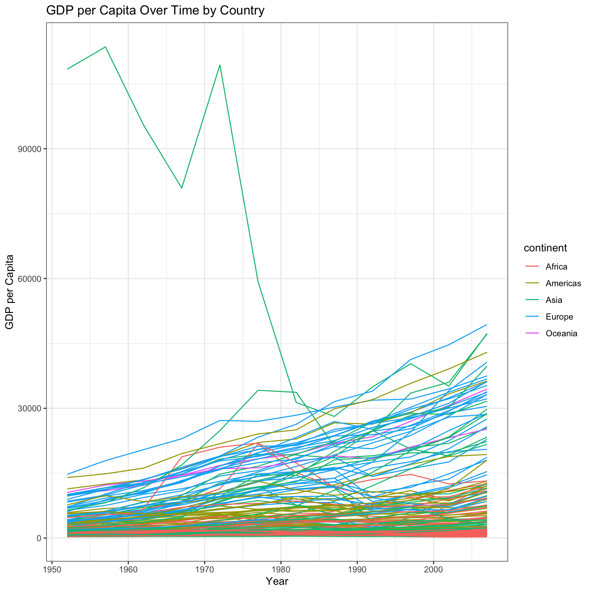
And now we have a spaghetti plot!
Saving plots to file
Let’s take a brief pause from experimenting with plots and learn how
to save plots as image files. We should have three plots that we’ve
saved as objects: gdp_life_plot, poland_plot,
and gdp_over_time_plot. Let’s save these plots as files
using the ggsave() function.
The ggsave() function is an easy way to specify which
plots to save, at what location, at what size and resolution, and in
what format. Let’s first have a look at the help file to figure out
which parameters we should pay attention to.
?ggsaveThe filename parameter can determine what format to
write the file in based on the extension (e.g. .tiff,
.png, .pdf, or .jpeg). Next the
height and width can be specified in any
number of units to get the exact size figure you prefer.
Finally, the dpi parameter specifies the resolution in
“dots per inch”, and this parameter can ensure that the plots you output
are sufficiently high-quality to submit as part of a publication to a
journal. Typically 300dpi is sufficient. With this in mind, let’s save
the gdp_life_plot:
ggsave(filename = 'gdp_life_plot.png', plot = gdp_life_plot, width = 6, height = 6, units = 'in', dpi = 300)Bar plots
Let’s next create a bar plot that shows the global GDP over time with
continent-wise contributions separated by color. Let’s first mold the
fine-grained gapminder data into a summarized form where we
can see the totals per continent per year directly rather than try to
rely on ggplot2 doing the “right thing”.
gdp_by_continent_year = gapminder %>%
group_by(continent, year) %>%
summarize(aggregate_gdp = sum(total_gdp))`summarise()` has grouped output by 'continent'. You can override using the `.groups` argument.gdp_by_continent_year# A tibble: 60 × 3
# Groups: continent [5]
continent year aggregate_gdp
<chr> <int> <dbl>
1 Africa 1952 3.12e11
2 Africa 1957 3.83e11
3 Africa 1962 4.57e11
4 Africa 1967 5.95e11
5 Africa 1972 7.84e11
6 Africa 1977 9.72e11
7 Africa 1982 1.15e12
8 Africa 1987 1.25e12
9 Africa 1992 1.37e12
10 Africa 1997 1.56e12
# … with 50 more rowsLet’s also summarize the data by year only, we’ll use this in a moment:
gdp_by_year = gapminder %>%
group_by(year) %>%
summarize(aggregate_gdp = sum(total_gdp))
gdp_by_year# A tibble: 12 × 2
year aggregate_gdp
<int> <dbl>
1 1952 7.04e12
2 1957 8.90e12
3 1962 1.10e13
4 1967 1.42e13
5 1972 1.84e13
6 1977 2.23e13
7 1982 2.54e13
8 1987 3.01e13
9 1992 3.45e13
10 1997 4.10e13
11 2002 4.73e13
12 2007 5.81e13Now, to build our plot, let’s look at the help function for
geom_bar():
?geom_barLooking through the description:
geom_bar()makes the height of the bar proportional to the number of cases in each group.- If you want the heights of the bars to represent values in the data,
use
geom_col()instead.
Since we want the height of the bars to represent the values of the
aggregate_gdp column, we should be using
geom_col(), a relative of geom_bar(). To make
this graph, it’s clear we want the year on the x-axis, the
aggregate_gdp on the y-axis, and if we want to separate the
continents apart in the graph, we will use a new aesthetic parameter
called fill and assign it continent.
ggplot(data = gdp_by_continent_year, aes(x = year, y = aggregate_gdp, fill = continent)) + geom_col()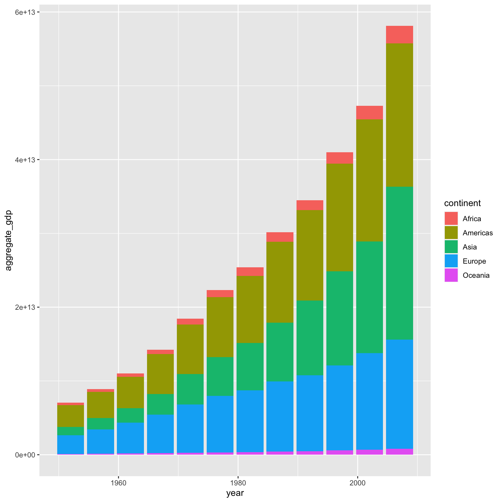
This is a good start. The x-axis doesn’t label each bar with the
year, which can make the graph difficult to read. This is because in
gdp_by_continent_year the year column is
considered an integer. We could coerce the column to a character and
remake the graph.
gdp_by_continent_year$year = as.character(gdp_by_continent_year$year)And while we’re at it, let’s clean up the labels a bit, and save the plot as an object.
aggregate_gdp_plot = ggplot(data = gdp_by_continent_year, aes(x = year, y = aggregate_gdp, fill = continent)) +
geom_col() +
labs(title = 'Global GDP Over Time (by continent)', x = 'Year', y = 'Aggregate GDP', fill = 'Continent')
aggregate_gdp_plotLet’s verify that this plot is summing up the global GDP as we’d
expect. We created gdp_by_year:
gdp_by_year# A tibble: 12 × 2
year aggregate_gdp
<int> <dbl>
1 1952 7.04e12
2 1957 8.90e12
3 1962 1.10e13
4 1967 1.42e13
5 1972 1.84e13
6 1977 2.23e13
7 1982 2.54e13
8 1987 3.01e13
9 1992 3.45e13
10 1997 4.10e13
11 2002 4.73e13
12 2007 5.81e13We could spot check these values by eye, or we could add a layer to
the plot quickly in the form of a horizontal line to see if the data
matches up with geom_hline(). It looks like in 1977, global
GDP was around $2.23 trillion, so if we add a horizontal line at that
value, it should hit the top of the 1977 bar.
aggregate_gdp_plot + geom_hline(yintercept = 2.23e13)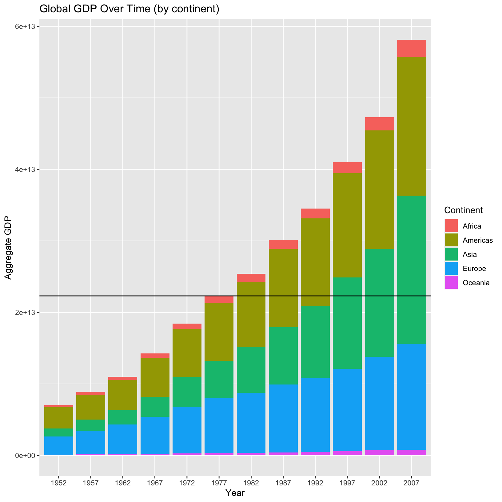
That looks correct, suggesting that the plot matches our expectations!
Alternate positions
In the above plot we “stacked” the continents on top of each other
and that showed us the aggregate global GDP, but we’re left with a more
qualitiative sense for each continent’s GDP over time because of the
stacked nature of the plot (i.e. from the stacked plot, what is the
aggregate Asian GDP in 2007?). There is a position
parameter in geom_bar() and geom_col() which
controls this behavior.
ggplot(data = gdp_by_continent_year, aes(x = year, y = aggregate_gdp, fill = continent)) +
geom_col(position = 'dodge') +
labs(title = 'Global GDP Over Time (by continent)', x = 'Year', y = 'Aggregate GDP', fill = 'Continent')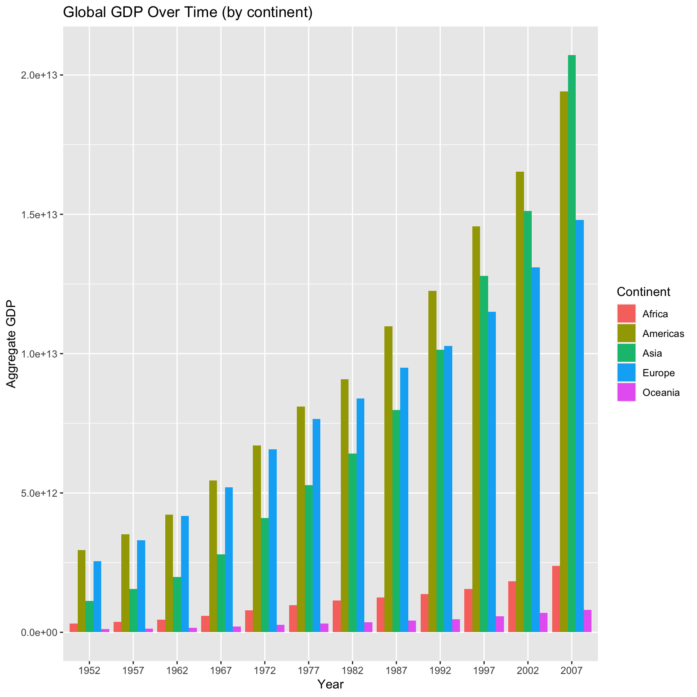
Now we can directly see each continent’s aggregate GDP over time.
Summary
In this lesson we’ve introduced the basic concepts underpinnning ggplot2:
- Data
- Mappings
- Layers
- Geoms
- Stats
- Scales
- Coords
- Facets
- Themes
We’ve introduced a number of specific geometries:
geom_point()geom_line()geom_bar()andgeom_col()
We explored various customizations:
- Color palettes
- Plot, axis, and legend titles
We explored how to save our plots in different formats and resolutions to ensure publication quality graphics.
Finally, we learned the importance of verifying plots of data by making corresponding transformations and syncing up the results. In essence, having a data artifact that is in one-to-one correspondence with a plot can help in the explanatory and troubleshooting process.
Resources
- ggplot2:
Elegant Graphics for Data Analysis is a definitive book of the
Grammar of Graphics and
ggplot2implementation. - ggplot2 official page is the official landing page describing ggplot2 as part of the tidyverse.
- patchwork, a package to easily add plots together!